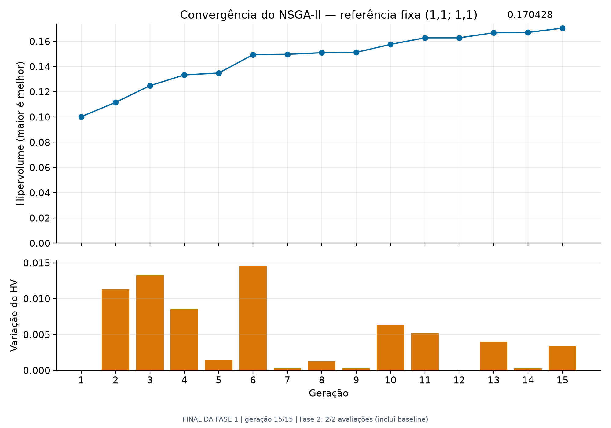
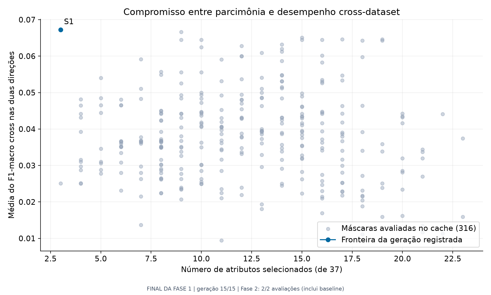
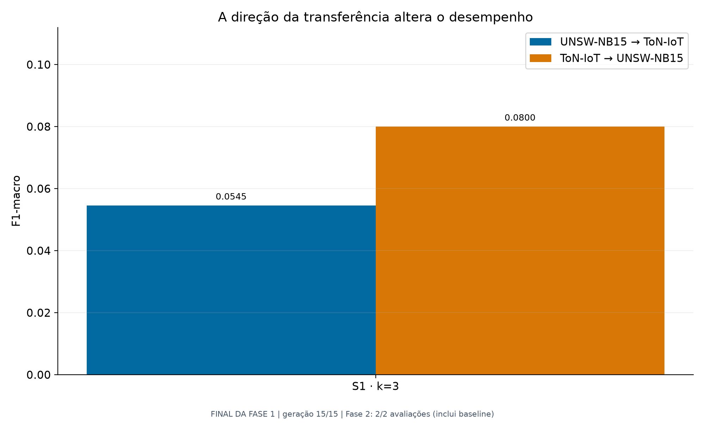
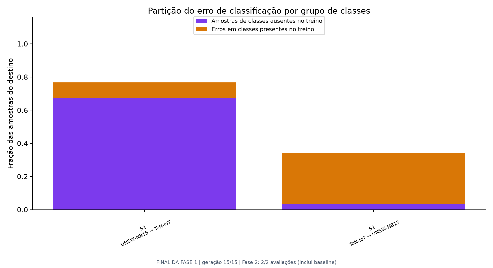
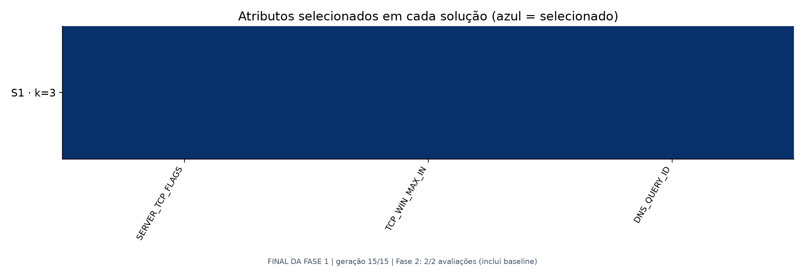
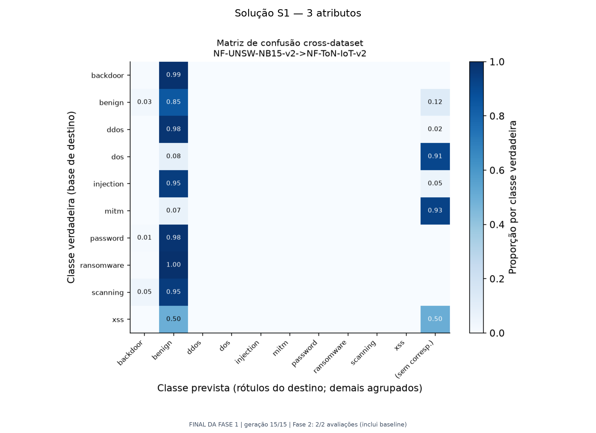
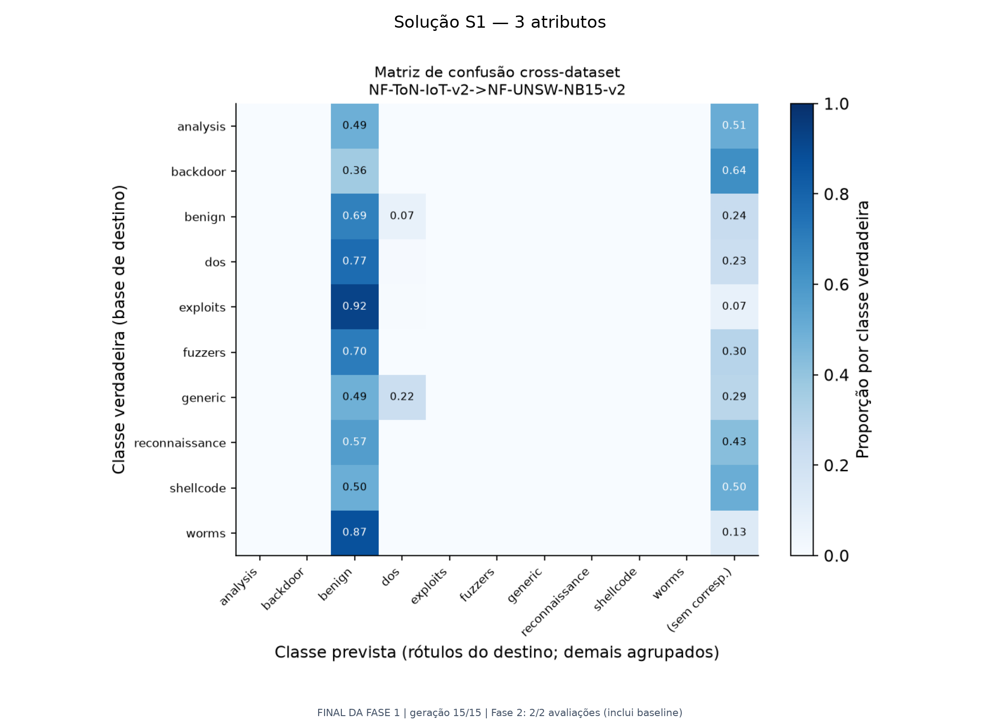
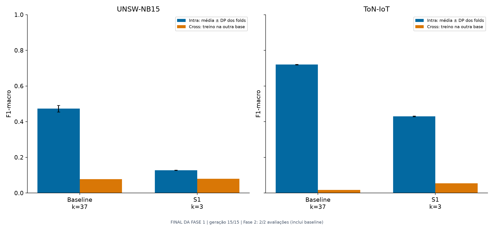

Generalização cross-dataset em IDS
Soluções da fronteira
| solucao | numero_atributos | reducao_atributos_pct | f1_cross_medio | NF-UNSW-NB15-v2->NF-ToN-IoT-v2 | NF-ToN-IoT-v2->NF-UNSW-NB15-v2 |
|---|
| S1 | 3 | 91.89189189189189 | 0.06726371341929474 | 0.05453735773837897 | 0.0799900691002105 |
Leitura e limites dos resultados
- Hipervolume: 0.100282 na geração 1 e 0.170428 na geração 15. Variação na última geração: +0.003375. Houve melhora na última geração; a curva não sustenta afirmar estabilização ao encerrar.
- Hipervolume da fronteira sobrevivente por geração; referência fixa (1.1, 1.1), objetivos em [0,1]. Histórico reconstruído apenas pelo cache e validado contra a fronteira salva. A curva não comprova ótimo global. Método: https://pymoo.org/getting_started/part_4.html
- Os dados são os Parquets completos; não foi aplicada subamostragem. Classificador: árvore de decisão, profundidade 8 e pesos balanceados.
- NSGA-II: população 24, 15 gerações previstas, seed 42. A fronteira mostrada pertence à geração registrada; o cache pode conter avaliações posteriores ainda sem uma geração concluída.
- O F1-macro cross segue a implementação atual: classes do destino ausentes no treino são agrupadas no código -1; a média usa a união dos rótulos observados e previstos. Não equivale a calcular macro-F1 individualmente para cada categoria original desconhecida.
- A partição de erros representa frações de amostras, não uma decomposição do F1. Erros nas classes conhecidas não comprovam isoladamente domain shift.
- As matrizes representam a solução mais compacta. A coluna sem correspondência agrupa previsões de classes da origem ausentes no vocabulário do destino.
- As bases usadas na transferência também participam da seleção das máscaras; estes valores são critérios de seleção, não estimativas em teste externo independente.
- Uma única seed não permite afirmar estabilidade entre execuções. O conjunto apresentado não determina uma solução vencedora sem um critério adicional.
- Avaliações detalhadas disponíveis: 2. Barras de dispersão mostram o desvio padrão entre folds, não intervalo de confiança.







